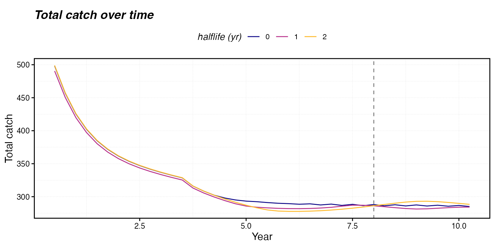

Spatial Allocation Memory
Source:vignettes/articles/spatial-allocation-memory.Rmd
spatial-allocation-memory.RmdThe spatial-allocation vignette covers what each
spatial_allocation strategy does. This companion
focuses on the memory_halflife argument to
create_fleet(): when it matters, what it fixes, and what
its failure mode looks like.
By default the objective surface a fleet acts on is rebuilt fresh
each step from the previous step’s outcomes — a one-step-lag signal.
Under strong fleet-biomass coupling this can drive period-2 sawtooth
oscillation in patch effort: last-step buffet picks where to fish,
this-step fishing changes biomass, next-step buffet inverts.
memory_halflife > 0 replaces the raw per-patch objective
with an exponentially-smoothed version: a weighted average in which the
weight on the observation from
steps ago decays geometrically, so the most recent observation has the
largest influence and older ones fade away:
The half-life is specified in years and converted internally to steps (), so the same value produces the same calendar-time smoothing regardless of seasons per year. Three implementation details matter:
- Closed-patch policy is “freeze and resume”: the smoothed surface only updates on currently-open patches. Closed patches retain their last-seen smoothed value, so an MPA that closes then re-opens a patch sees the fleet’s pre-closure memory of it.
- Warm-up ramp: on the very first step the smoothed history is seeded with the observed objective surface. For the next few steps the effective smoothing weight is , where counts updates since the seed step — so the smoothed surface behaves like a running mean over the warm-up window rather than being anchored to the seed value. Once drops below the asymptotic , the ramp is done.
- Phase-lag tradeoff: exponential smoothing introduces a phase lag of roughly years between a real change in patch marginal value and the fleet’s perceived value. Long half-lives can therefore replace high-frequency sawtooth with low-frequency overshoot — a different pathology.
Memory smooths only the spatial allocation objective. Total
fleet effort under open_access or sole_owner
still responds to the raw fleet-level profitability signal, which has
its own slow timescale built in via the entry/exit caps.
Setup
We reuse the two-species, two-fleet, two-port system from the main
spatial-allocation vignette, then build a marginal_profit
allocator on both fleets — the configuration most prone to sawtooth —
and close an offshore corner mid-run to force redistribution.
library(marlin)
library(ggplot2)
library(dplyr)
library(tidyr)
theme_set(marlin::theme_marlin(base_size = 12) +
theme(legend.position = "top"))
resolution <- c(20, 20)
patches <- prod(resolution)
seasons <- 2
time_step <- 1 / seasons
ports <- data.frame(x = c(1, 8), y = c(1, 9))
critter_correlations <- matrix(c(1, -0.5,
-0.5, 1), nrow = 2)
habitats <- sim_habitat(
critters = c("bigeye", "skipjack"),
kp = 0.1,
critter_correlations = critter_correlations,
resolution = resolution,
patch_area = 1,
output = "list"
)
bigeye_habitat <- habitats$critter_distributions$bigeye
skipjack_habitat <- habitats$critter_distributions$skipjack
fauna <-
list(
"bigeye" = create_critter(
common_name = "bigeye tuna",
habitat = list(bigeye_habitat),
season_blocks = list(1:seasons),
adult_home_range = 5,
recruit_home_range = 10,
density_dependence = "local_habitat",
seasons = seasons,
depletion = 0.5,
init_explt = 0.2,
explt_type = "f",
resolution = resolution,
steepness = 0.6,
ssb0 = 1000
),
"skipjack" = create_critter(
scientific_name = "Katsuwonus pelamis",
habitat = list(skipjack_habitat),
season_blocks = list(1:seasons),
adult_home_range = 3,
recruit_home_range = 8,
density_dependence = "local_habitat",
seasons = seasons,
depletion = 0.6,
init_explt = 0.15,
explt_type = "f",
resolution = resolution,
steepness = 0.7,
ssb0 = 800
)
)The fleet builder takes halflife and applies it to both
fleets; the metier and port structure is identical to the main
vignette.
build_fleets <- function(halflife,
spatial_allocation = "marginal_profit",
fleet_model = "constant_effort") {
fleets <- list(
"longline" = create_fleet(
list(
"bigeye" = Metier$new(
critter = fauna$bigeye, price = 10,
sel_form = "logistic", sel_start = 1, sel_delta = 0.01,
catchability = 0, p_explt = 2
),
"skipjack" = Metier$new(
critter = fauna$skipjack, price = 5,
sel_form = "logistic", sel_start = 0.8, sel_delta = 0.1,
catchability = 0, p_explt = 1
)
),
ports = ports, base_effort = patches, resolution = resolution,
spatial_allocation = spatial_allocation,
fleet_model = fleet_model,
cr_ratio = 1, travel_fraction = 0.7,
memory_halflife = halflife,
responsiveness = 0.025
),
"handline" = create_fleet(
list(
"bigeye" = Metier$new(
critter = fauna$bigeye, price = 10,
sel_form = "logistic", sel_start = 1.2, sel_delta = 0.1,
catchability = 0, p_explt = 1
),
"skipjack" = Metier$new(
critter = fauna$skipjack, price = 8,
sel_form = "logistic", sel_start = 0.5, sel_delta = 0.2,
catchability = 0, p_explt = 2
)
),
ports = ports, base_effort = patches, resolution = resolution,
spatial_allocation = spatial_allocation,
fleet_model = fleet_model,
cr_ratio = 1, travel_fraction = 0.5,
memory_halflife = halflife,
responsiveness = 0.025
)
)
tune_fleets(fauna, fleets, tune_type = "depletion")
}Halflife sweep with an MPA closure
We close an offshore corner at year 8 and sweep
memory_halflife across c(0, 1, 2) years. The
expectation: at memory_halflife = 0 (legacy behaviour) the
dynamics show visible high-frequency wiggle in individual patches;
modest memory dampens it cleanly; very long memory introduces a
different problem — low-frequency overshoot driven by the phase lag the
smoothing imposes.
years_5 <- 20
mpa_year_5 <- 8
mpa_locs_5 <- expand_grid(x = 1:resolution[1], y = 1:resolution[2]) %>%
mutate(mpa = x >= 12 & y >= 12)
manager_5 <- list(mpas = list(locations = mpa_locs_5, mpa_year = mpa_year_5))
halflives_5 <- c(0, 1, 2)
runs_5 <- lapply(halflives_5, function(hl) {
sim <- simmar(fauna = fauna, fleets = build_fleets(hl),
years = years_5, manager = manager_5)
proc <- process_marlin(sim, time_step = time_step)
list(halflife = hl, proc = proc)
})Two patch-level metrics, computed on the post-MPA window:
- lag-1 autocorrelation of patch effort (low / negative ⇒ sawtooth)
-
step-difference CV:
sd(diff(effort)) / mean(effort), capturing high-frequency wiggle on top of any trend
post_mpa_metrics <- function(r, burn_after_mpa_years = 2) {
start_step <- (mpa_year_5 + burn_after_mpa_years) * seasons
r$proc$fleets %>%
filter(step > start_step) %>%
arrange(fleet, patch, step) %>%
group_by(fleet, patch) %>%
summarise(
mean_effort = mean(effort, na.rm = TRUE),
effort_acf1 = if (n() > 3 && stats::sd(effort, na.rm = TRUE) > 0)
stats::acf(effort, plot = FALSE, lag.max = 1)$acf[2] else NA_real_,
step_diff_cv = if (n() > 3 && mean(effort, na.rm = TRUE) > 1e-9)
stats::sd(diff(effort), na.rm = TRUE) / mean(effort, na.rm = TRUE) else NA_real_,
.groups = "drop"
) %>%
mutate(halflife = r$halflife)
}
all_metrics <- purrr::map_dfr(runs_5, post_mpa_metrics) %>%
filter(mean_effort > 1e-3)
all_metrics %>%
group_by(halflife, fleet) %>%
summarise(
n_patches = n(),
median_effort_acf1 = signif(median(effort_acf1, na.rm = TRUE), 3),
median_step_diff_cv = signif(median(step_diff_cv, na.rm = TRUE), 3),
p90_step_diff_cv = signif(quantile(step_diff_cv, 0.9, na.rm = TRUE), 3),
.groups = "drop"
) %>%
knitr::kable(digits = 3,
caption = "Post-MPA per-patch effort autocorrelation and high-frequency wiggle, by halflife and fleet.")| halflife | fleet | n_patches | median_effort_acf1 | median_step_diff_cv | p90_step_diff_cv |
|---|---|---|---|---|---|
| 0 | handline | 319 | NA | 0 | 0 |
| 0 | longline | 319 | NA | 0 | 0 |
| 1 | handline | 319 | NA | 0 | 0 |
| 1 | longline | 319 | NA | 0 | 0 |
| 2 | handline | 319 | NA | 0 | 0 |
| 2 | longline | 319 | NA | 0 | 0 |
# Pick the 3 most-oscillating patches per fleet under the lowest halflife;
# trace each across all three runs.
baseline_hl <- min(halflives_5)
top_patches <- all_metrics %>%
filter(halflife == baseline_hl) %>%
group_by(fleet) %>%
slice_max(step_diff_cv, n = 3, with_ties = FALSE) %>%
ungroup() %>%
select(fleet, patch)
trace_df <- purrr::map_dfr(runs_5, function(r) {
r$proc$fleets %>%
semi_join(top_patches, by = c("fleet", "patch")) %>%
transmute(fleet, patch, step, year = step * time_step, effort,
halflife = factor(r$halflife, levels = sort(unique(halflives_5))))
})
ggplot(trace_df, aes(year, effort, color = halflife)) +
geom_line() +
geom_vline(xintercept = mpa_year_5, linetype = "dashed", alpha = 0.5) +
facet_grid(fleet ~ patch, scales = "free_y", labeller = label_both) +
scale_y_continuous(limits = c(0,NA)) +
scale_color_viridis_d(option = "C", end = 0.85) +
labs(
title = "Patch effort traces, most-oscillating patches per fleet",
subtitle = sprintf("Dashed line: MPA closure at year %d. halflife is years (season-agnostic).",
mpa_year_5),
x = "Year", y = "Patch effort", color = "halflife (yr)"
)
catch_ts <- purrr::map_dfr(runs_5, function(r) {
r$proc$fauna %>%
group_by(step) %>%
summarise(catch = sum(c, na.rm = TRUE), .groups = "drop") %>%
mutate(year = step * time_step,
halflife = factor(r$halflife, levels = sort(unique(halflives_5))))
})
ggplot(catch_ts, aes(year, catch, color = halflife)) +
geom_line() +
geom_vline(xintercept = mpa_year_5, linetype = "dashed", alpha = 0.5) +
scale_color_viridis_d(option = "C", end = 0.85) +
labs(title = "Total catch over time",
x = "Year", y = "Total catch", color = "halflife (yr)")
Reading the patch traces: halflife = 0 shows the
high-frequency wiggle that motivates the parameter, sharpened further by
the MPA closure. halflife = 1 (one year of memory) sits
near the median of the sawtooth and removes the high-frequency
component. halflife = 2 smooths further but begins to
introduce slower swings driven by phase lag: the fleet’s perceived
objective is now lagging the real one by ~3 years, so it reallocates
toward patches that used to be high-value.
When does memory matter?
The susceptibility to one-step-lag oscillation depends strongly on a fleet’s configuration. Memory is not a universal upgrade; in many configurations it adds nothing or hurts.
-
Allocation strategy.
marginal_profitandmarginal_revenuehave the most direct fleet-biomass feedback — the objective at a patch responds immediately to last step’s fishing there — and are the most prone to sawtooth.ppue/profit/rpue/revenueintegrate over the production curve, which damps the feedback.manualanduniformignore the buffet entirely, so memory does nothing for them (and is correctly skipped bysimmar()). -
Fleet model.
constant_effortfleets have only the spatial-allocation feedback loop, so the spatial smoothing in memory is the only mechanism stabilising them.open_accessandsole_ownerfleets also adjust total effort each step from a fleet-wide profitability signal, which has its own slow damping built in via the annual entry/exit caps — but that signal itself is not smoothed bymemory_halflife. If you observe sawtooth in total fleet effort (rather than in patch-level allocation), memory will not fix it; the right knob lives in the open-access / sole-owner parameters. -
System structure. Strong fleet-biomass coupling
(high catchability relative to stock productivity, fast movement that
smooths biomass and equalises marginals, MPA closures that force
redistribution) all amplify the one-step-lag feedback. Without any of
these, the canonical scenarios in the main spatial-allocation vignette
behave smoothly even at
halflife = 0.
Sensible values for memory_halflife depend on the time
scale of stock and fleet dynamics. For most marine fisheries with annual
or sub-annual seasons, 0.5–1.5 years is a useful
starting range. If catch or effort trajectories at a chosen halflife
show slow swings that aren’t present at
memory_halflife = 0, reduce it; you’ve crossed into the
phase-lag regime. If the system is well-behaved at
memory_halflife = 0, leave it there.